设色 QA（截图肉眼验收）
2026-08-31 14:21:45
✅ 全部通过
判定：① 整耳双层 ② 耳区裁剪图前后对比应有大量变色像素 ③ 脖子区裁剪图应几乎不变（像素差>28 的计数≤阈值）。不再用「探针凑数」代替整耳目视。
耳朵 4/4 · 帽状腱膜 通过
耳朵整耳设色
用户复现·左侧面点耳 PASS
点击 (58%, 46%) · 整耳 · 18307px · HSL H=-56° S=35
贴图 Static 10187/10187 · Deform 8120/8120
截图分析：耳区变色像素 588 · 脖子区 25
✅ 截图可视 + 数据均通过
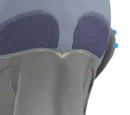
耳区·设色前
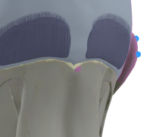
耳区·设色后（应整耳变色）
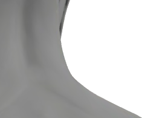
脖子区·设色前
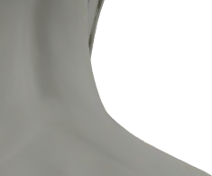
脖子区·设色后（应不变色）
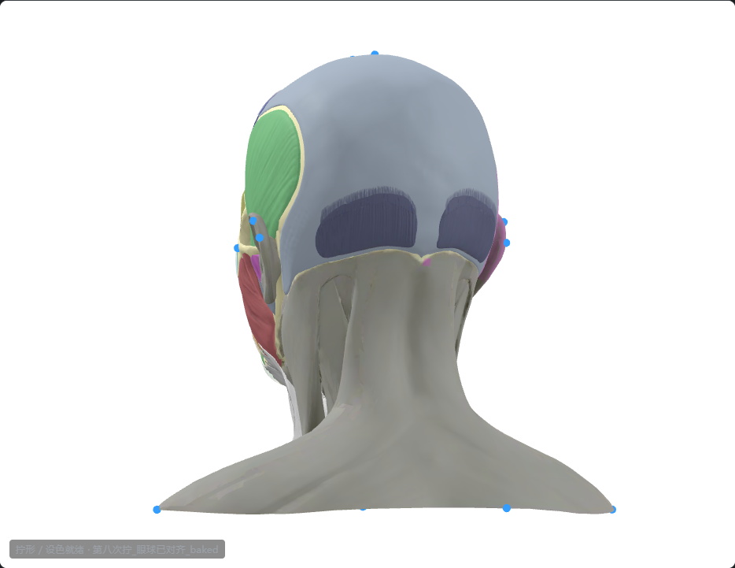
全画布·设色后
左侧面 PASS
点击 (59%, 54%) · 整耳 · 17902px · HSL H=43° S=85
贴图 Static 9967/9967 · Deform 7935/7935
截图分析：耳区变色像素 473 · 脖子区 9
✅ 截图可视 + 数据均通过
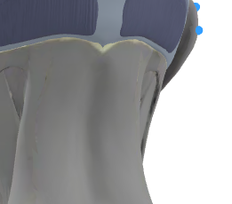
耳区·设色前
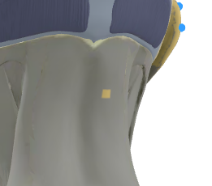
耳区·设色后（应整耳变色）
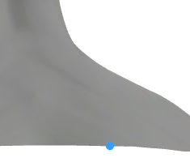
脖子区·设色前
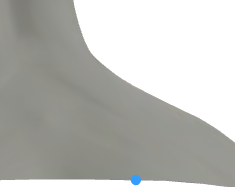
脖子区·设色后（应不变色）
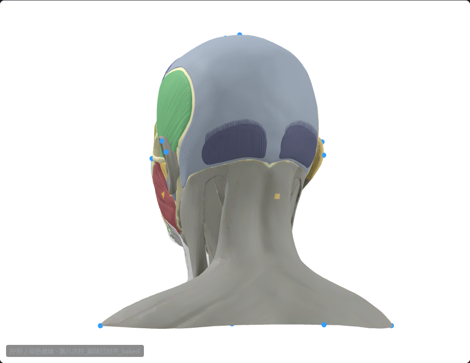
全画布·设色后
右侧面 PASS
点击 (38%, 48%) · 整耳 · 17042px · HSL H=43° S=85
贴图 Static 9665/9665 · Deform 7377/7377
截图分析：耳区变色像素 379 · 脖子区 1
✅ 截图可视 + 数据均通过
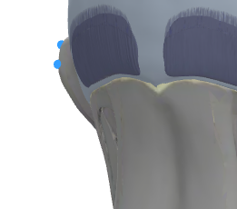
耳区·设色前
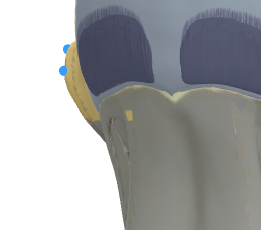
耳区·设色后（应整耳变色）
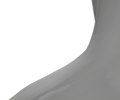
脖子区·设色前
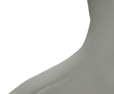
脖子区·设色后（应不变色）
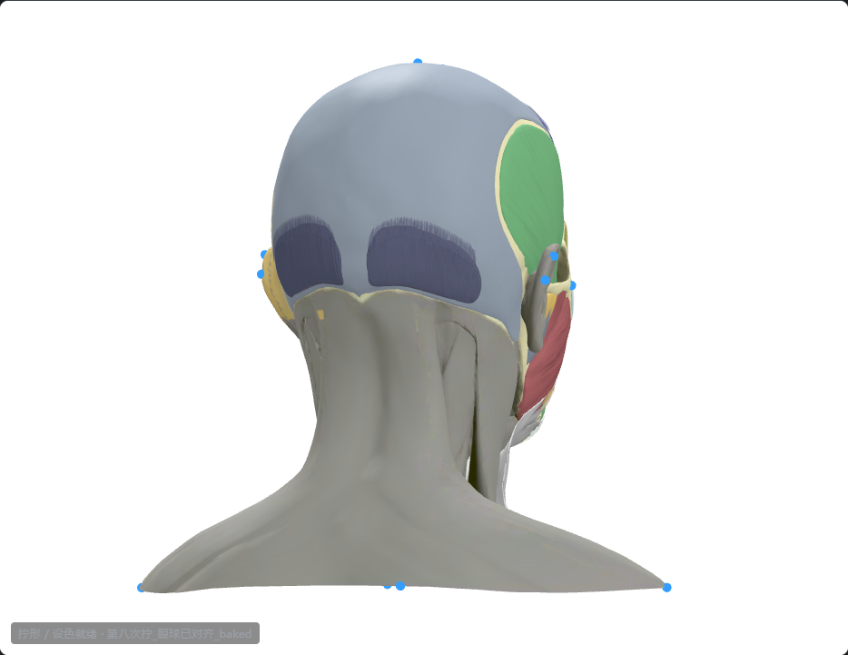
全画布·设色后
左四分之三 PASS
点击 (40%, 50%) · 整耳 · 17095px · HSL H=43° S=85
贴图 Static 9618/9618 · Deform 7477/7477
截图分析：耳区变色像素 2989 · 脖子区 4
✅ 截图可视 + 数据均通过
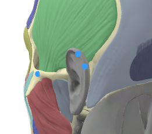
耳区·设色前
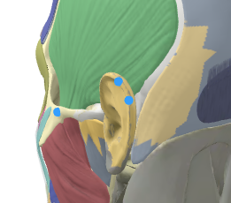
耳区·设色后（应整耳变色）
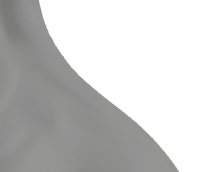
脖子区·设色前
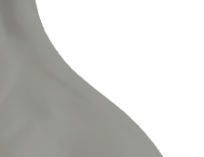
脖子区·设色后（应不变色）
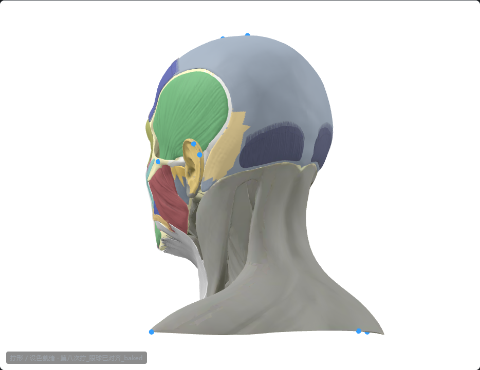
全画布·设色后
帽状腱膜
帽状腱膜
✅ OK